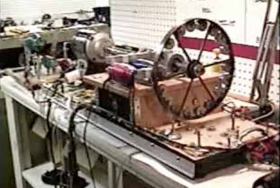
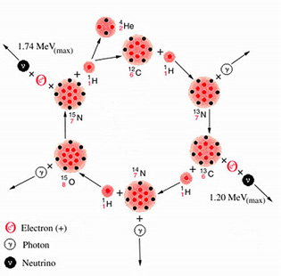
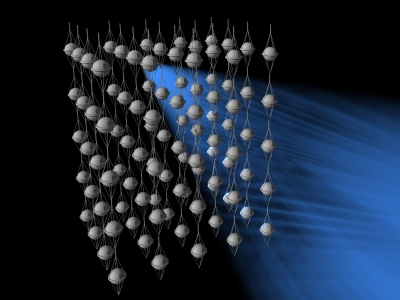
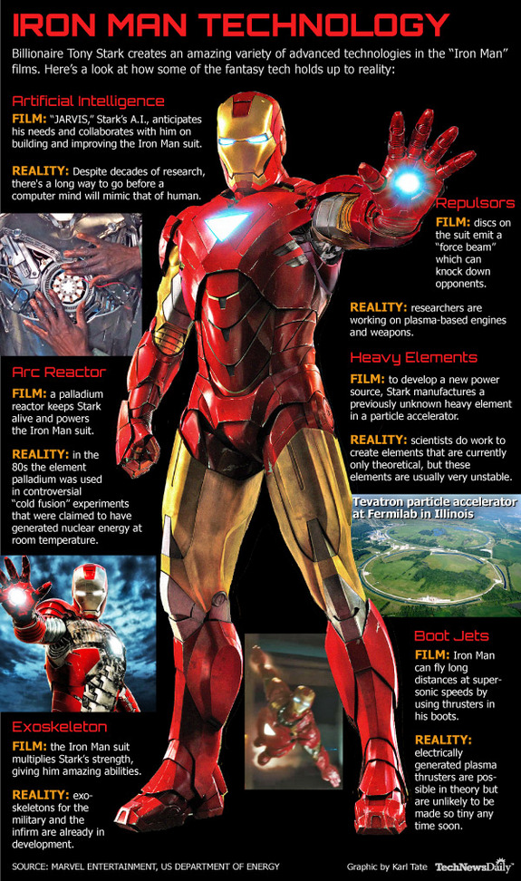
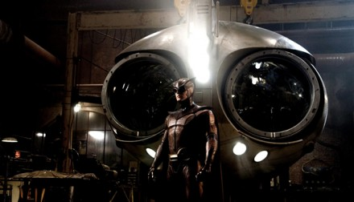

Popular Science
Contents
- Geeky is the New Sexy
- Into a Black Hole
- Mangalyaan -Truly Indian
- Perpetual Motion -The Holy Grail of Inventors
- The Neutrino Mystery
- Want to Become a SUPERHERO
Geeky is the New Sexy
-Udit Khanna, BVCOE

All work and no play makes Jack a dull boy. Architects of language must consider revising the proverb because today, for that matter, ‘dull’ boys like Jack build dexterous robotic arms to save a bit of trouble to their mother in the kitchen. No wonder, if some other Jack experiments tomorrow to teleport his father directly to office! Conspicuously, generations have seen a transformation of children’s interest from watching Tom and Jerry and reading Archie’s comics, to watching Dexter’s Laboratory and reading Sherlock Holmes.
Taking a break from the usual entertainment, science-obsessed teens today have a fire in their bellies to untangle mysteries and satisfy their curiosity. As well deserved appreciation, some of the geeks are being bestowed upon worldwide recognition through various platforms. A finalist of the recent Google Science fair, 18 year old Charalampos Ioannou from Greece has built a motion-sensing glove that activates motors to boost hand muscles. Far from one’s imagination, the glove’s primary application is to enhance the ability of aged people to grasp everyday objects firmly in their hands. Viney Kumar from Sydney, another high school geek felicitated at the fair has utilized Android mapping technology to create a downloadable application that updates the user if there is any emergency vehicle in the vicinity.
Surprisingly, all it took was the lad’s curiosity to know what more than the GPS in his cell-phone should it take to update drivers more quickly than sirens, making way for an ambulance stuck in traffic. If that isn’t astonishing enough, a science student from British Columbia, distressed at the plight of her friend studying without electricity, got engaged into experimenting with solid-state devices.She eventually created a flashlight that runs without any batteries!
Just so you know, the girl made ‘Peltier Tiles’ absorb the body’s heat and converted it into electricity.
Teenagers today exploit many wireless systems daily, but not many wonder how to make use of this luxury to meet ‘needs’. Playing around with radio frequency devices, Brad Mager devised a three-dimensional system that alerts caretakers if someone has fallen to the ground. Another similar device built by roboticists integrates obstacle sensors and a Bluetooth device with a walking stick, thus giving crucial warnings to blind people by the use of a headset.
With many such accomplishments being reported daily, it shouldn’t go unnoticed that the wonders marveled by these ‘geeks’ have kindled out of a straight-forward approach, providing solutions that cater to necessity rather than pandering man with luxury. By conceptualizing reality instead of imagination, they teach us an important lesson: Doing science is light-years away from studying science. Yet, all it takes to bridge the gap is curiosity. Geeky, is definitely the new sexy!
INTO A BLACK HOLE
-Payal Mangla, BVCOE
It is sometimes so difficult to believe or even think about the existence of some things, and that’s because these are so different from normal that our mind is unable to accept them or the reasoning behind them. This is somewhat true for Black Holes, one of the strangest things ever dreamt or seen by science.
Black Holes were first of all pointed out in 1783. It was brought forward that there are some regions in space that could not be seen but a very strong impact of force could be felt around them. This was the gravitational force due to a massive star, so strong that even light could not escape. Such regions or objects of space were then called Dark Stars and are now called Black Holes.
Suppose there is a massive star that has burnt up its nuclear fuel completely, then if it cools and shrinks below a critical size, it will literally end up making a hole in space that light can’t get out of, i.e., a Black Hole. From the outside you can’t tell what is inside a black hole. Even when you throw something inside a black hole and once its inside, you are wrong if you say that you know what you threw inside, because all that black hole remembers is the total mass and the state of rotation. Everything else gets lost inside. The force experienced due to a black hole varies with positioning; it is strongest at its boundary which is called the Event Horizon. Even light gets trapped inside at this region, and since nothing can travel faster than light, everything else also can be pulled inside.
Once you fall in a black hole, as for the outside world, you would be lost forever. The only thing that remains in the black hole is information. All the mass inside the black hole gets converted into energy (E= mc squared) and energy finally into information. So, bigger the black hole more is the information inside it. But it was also discovered that particles could leak out of a black hole but on a very small scale, if they somehow happened to travel at a speed greater than light. This was brought forward after the Heisenberg’s uncertainty principle; you may know the position of a particle, that it’s in the black hole, accurately, but then, not the speed it may have inside.
If particles escape from black holes, they will eventually start losing information and as a result, will shrink and may even disappear. But the problem is that what comes out of a black hole has no relation with what goes in, i.e., something random will come out. The information for what fell in is completely lost apart from the total mass. Right now we don’t have any black holes near us but what if we do in future? It is therefore very important to determine whether information really gets lost in black holes, whether it can be recovered or preserved.
Mangalyaan: Truly Indian
-Aman Garg, BVCOE
“Indian Mars orbiter reaching Mars at the cost of Rs. 12 per kilometer”
12 Rupees per kilometer? I almost presumed Indians have assembled a flying auto-rickshaw when I first learned about Mangalyaan.
India's first Mars orbiter, popularly and officially known as ‘Mangalyaan’, witnessed its much anticipated launch with Polar Satellite Launch Vehicle-C25 (PSLV C-25) on 5 November 2013 from Sriharikota launch pad, and is expected to reach its destination orbit on 14 September, 2014. The ISRO space probe started its nine-month 400 million kilometer long odyssey towards the red planet to look for the presence of Methane in Martian atmosphere. The cost of the project is $72.9 million (about Rs. 450 Crores) which is approximately and surprisingly costing just Rs. 12 km per hour! Success of this mission is definitely expected to establish an Asian hegemony of India in the aerospace domain.
Objective and Minutiae
According to Indian scientists it’s the showcase of Indian technology in the form of an attempt to study space conditions beyond Earth’s orbit. Once into the Mars orbit, the 1.3-tonne orbiter will attempt to capture concrete details of climate, geological conditions and evidence of water, with thermal infrared sensors. Five scientific instruments that have been deployed on board will help to ascertain any sign of life on the planet. With its successful launch, India becomes the sixth nation to be heading towards the red planet.
Point of Criticism
Although the mission cost is cheap according to the standard of a developed country, implementation of the mission has gone through severe condemnation in India itself. Economists and social activists have criticized criticized the amount of money spent on this mission, questioning the negligence to problems of food resources, clean water and poor sanitation persisting in the country. Some space research scientists have also argued with ISRO that the focus should have been on developing new satellites for commercial sector.
In the words of an ISRO Spokesperson, “The primary goal is the technical demonstration. This will help us by advancing our existing technology in communications and Earth observation satellites. We hope it will also inspire younger minds.”
Having that said, the ‘flying auto-rickshaw’ of India seems to offer a promising future for the country in space exploration.
Perpetual Motion- The holy grail of inventors
-Abhinav Sarkar, BVCOE

For centuries, the perpetual motion machine has been regarded as the holy grail of science. Many scientists and inventors have tried to make it, but none have succeeded. A perpetual motion machine is basically a device which, once set in motion, continues to produce energy without any external intervention. Simply put, it is a wheel which continues to rotate till the end of time. Seems pretty far-fetched, doesn’t it?
The whole concept of perpetual motion machine is flawed. It is basically a device which produces infinite energy, but according to the First Law of Thermodynamics, “Energy can neither be created nor be destroyed.”
Another kind of perpetual motion machine is usually defined as one that completely eliminates friction and other dissipative forces, to maintain motion due to inertia of mass. But such a device is impossible to make, as friction cannot be eliminated totally in any system.
Early designs of perpetual motion machine were made by Indian mathematician Bhaskara-II, during the 12th century. Bhaskara described an overbalanced wheel that he claimed would run forever. Leonardo Da Vinci made numerous drawings of devices that he believed would make free energy. Another 16th century Italian scholar proposed a self-blowing windmill. Robert Boyle devised a perpetual
motion cup which he claimed could sustain fluid flow forever. More perpetual motion devices followed in 17th century. None of these worked.
In 1775, The Royal Academy of Sciences in Paris, having had enough, made a statement that “The Academy will no longer accept or deal with proposals concerning perpetual motion.” Later, even the United States Patent and Trademark Office made an official policy of refusing applications regarding perpetual motion machine without a working model.
Regardless of this, the madness behind perpetual motion machine still continues and every year the patent offices around the world receive many applications regarding perpetual motion machines, most of them fraudulent or non-working.
Even though I am not the type to discourage
new inventors, but still I would like them to steer clear from
perpetual motion because it’s long been established that it’s a
wild goose chase. As appropriately put by Leonardo Da
Vinci,
THE NEUTRINO MYSTERY
-Harpreet Singh Khalsa, BVCOE

Hey, look! Here pass millions of neutrinos from your book. Oh my God, now they have crossed the moon!
You must be thinking, “What is it? I couldn’t see anything”. Well, relax. You are right. If you could actually see them, you wouldn’t have required a bulb to study at night. The small size and huge quantity of neutrinos furnish them with a tendency to behave similar to photons, thus imparting the potential to illuminate a night as a day. They are particles so light that even a 100,000 neutrinos may not balance one electron, but considering their titanic abundance in the universe, they may overtake the mass of matter present on our planet. Unfortunately, even half a century after their discovery, there’s little that we know about them.
While studying the emissions produced in certain radioactive transitions, the existence of tiny neutral particles was first predicted by physicist Wolfgang Pauli. He asserted on the basis of certain observations and experiments that the virtually massless particles would rarely interact with matter.
Arising out of fusion, Solar Neutrinos engender as a result of the nuclear reactions taking place in the core of the Sun and other stars. In due course of time, the ongoing research and experiments have indicated that even animals and humans produce another class of neutrinos as a byproduct of decomposition of their skeletal system.

The low mass and neutral charge of a neutrino impart it an
exceedingly weak interaction with other particles and fields. Such
attributes interest scientists because they indicate that neutrinos
can be used to probe environments that other radiations (such as
light or radio waves) cannot penetrate, thereby making it a
particle of paramount importance to disentangle many mysteries.
Alas, catching their holy grail is nothing less than catching a
ghost!
Want to become a superhero?
-- Shreshtha Jain, BVCOE

Have you ever tried to climb the walls like a ‘SPIDERMAN’ or found yourself boasting about your very own bulletproof ‘IRONMAN’ suit? A sound sleep with ‘sweet dreams’, wasn’t it? Well, it is not a dream anymore. Troy Hurtubise’s latest invention, ‘The Trojan S Series’ is a protective suit of modern armor i.e. the Ironman. Hurtubise claims that the suit, which is just weighing 13.6 kilograms, can withstand gunshots from a very close range and is light and flexible, making it easy to run, climb and drive in. This was made possible because of the ballistic grade protective panel which he invented and used in the Trojan Suit. This panel is able to deflect twelve bore shots and knives. So if you want to become the next Ironman you will just have to pay £35,000! But if you are not really interested in the Ironman, you can rather glide over the Gotham city like our own ‘BATMAN’. The ‘Gryphon’, having a wingspan of 1.8 meters and weighing 30 kilograms, is made up of light and durable material like carbon fiber. It can cruise for 50 kilometers and when pointed downwards, the Gryphon can reach to a terminal velocity of 250 miles per hour, fast enough to dodge away the Joker’s bullet easily.
Designed and developed by Spelco, the Gryphon costs around £ 10,300. Unfortunately if you or your kids want to become the next Spiderman, you will just have to wait a little. Keeping in mind the pace at which modern technology supersedes itself, it won’t take very long.
A wave of robots is in development that would climb vertical surfaces by using the phenomenon of induced electrostatic attraction, which is induced between the climbing pad and the surface it touches. Switching off and on the current allows the pads to move. Current prototypes can carry up to 34 kilograms of weight and according to Nicola Pugno, who is currently working on the man version size of this robot, there is no fundamental reason that why can a robot not carry 90 kilograms of weight.

Transforming dreams into reality, today’s technology can turn you into any superhero you want. So all the fans get ready to become the next superhero and save your city! Needless to say, with great power, comes great responsibility.